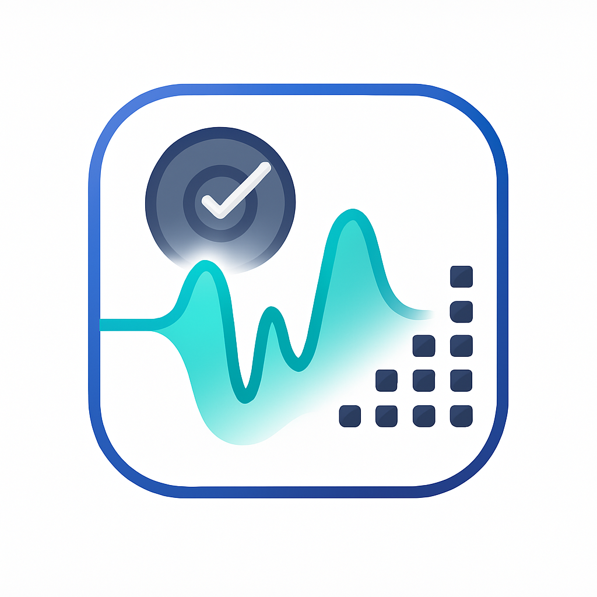

Listen without a reference.
Assess an audio sample on its own, from perceptual quality to speaker and signal characteristics.

VERSASPEECH · AUDIO · MUSIC
Versatile Evaluation of Speech and Audio.
One open-source toolkit to bring quality, intelligibility, and acoustic analysis into your evaluation workflow.
Built for researchers. Ready for your next experiment.
A WIDER PERSPECTIVE
Choose the metrics that fit your task, whether you have a reference recording, a text prompt, or a whole collection of audio.
Assess an audio sample on its own, from perceptual quality to speaker and signal characteristics.
Measure how predicted audio differs from a reference in fidelity, intelligibility, and acoustic detail.
Evaluate with non-matching references or information from other modalities, including text.
Compare statistical properties across audio collections to evaluate a system beyond individual samples.
FITS YOUR EXPERIMENT
Work with file paths, SCP lists, or Kaldi-style ARKs.
Select metrics with YAML configurations and install the backends your experiment needs.
Start locally, scale with Slurm, and explore your results with VERSA’s visualization tools.
FROM AUDIO TO INSIGHT
Install the toolkit, then try a configuration with the included audio samples. Add optional metric dependencies as needed.
Full installation guidegit clone https://github.com/wavlab-speech/versa.git
cd versa
pip install .
# Run on the included audio samples
python versa/bin/scorer.py \
--score_config egs/speech_cpu.yaml \
--pred test/test_samples/test2 \
--gt test/test_samples/test1 \
--output_file test_result \
--io dirA hands-on introduction to VERSA.
GO DEEPERExplore your evaluation from multiple perspectives.
BUILD ON VERSARead and cite the work behind the toolkit.